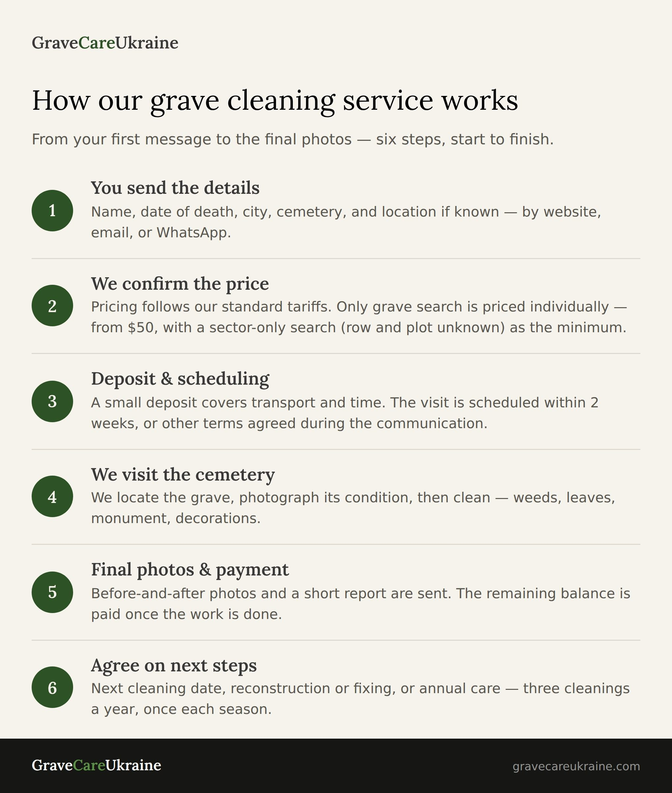

Як працює наша послуга прибирання могил в Україні: від першого повідомлення до фінальних фото
Простий, покроковий опис нашої послуги прибирання могил в Україні — як ви зв'язуєтесь з нами, як ми знаходимо могилу, що відбувається на кладовищі, і що ви отримуєте після.
#догляд за могилами прибирання могил

Якщо ви живете далеко від України, відвідати родинну могилу не завжди легко. Робота, відстань чи проблеми з організацією поїздки можуть стати на перешкоді регулярних поїздок, хоча б раз на один рік. Але багато людей все одно хочуть, щоб могила родичів була чистою і доглянутою.
Питання, яке нам зазвичай ставлять на початку:
"Як відбувається весь процес надання послуг і оплат?"
Ми займаємось цим з 2008 року. За ці роки ми відшліфували процес, для уникнення зайвих незручностей — щоб було чесно і комфортно і для вас, і для нас. Ось чіткий опис того, що відбувається — від першого повідомлення до фінальних фото.
Крок 1 — Ви пишете "Вітаю", ми уточнюємо деталі
Все починається з одного повідомлення. Ви можете написати нам через сайт, електронну пошту, WhatsApp, або просто зателефонувати.
Щоб знайти могилу і назвати вам ціну, нам потрібна ключова інформація:
- Повне ім'я та дата смерті померлого
- Населений пункт (назва міста чи села)
- Назва кладовища, якщо відомо
- Розташування могили — сектор, ряд і місце, якщо відомо
- Будь-яка додаткова інформація, яка допоможе ідентифікувати могилу — фото, опис пам'ятника, або проста схема від руки з орієнтирами, як її знайти
Ми знаємо, як шукати могилу, навіть якщо більшість цієї інформації невідома — та це просто займає більше часу і несе з собою додаткову оплату за пошук.
Крок 2 — Ми уточнюємо деталі та називаємо ціну
Наші ціни відкриті і доступні всім — їх можна побачити на сайті. Наприклад, ціна за одноразове прибирання діє, коли у вас вже є повні, точні координати могили — сектор, ряд і місце — тобто нам взагалі не потрібно її шукати: ні на кладовищі загалом, ні навіть у межах сектора.
Якщо місце ще не відоме — це вже інша робота, з окремими умовами. Як саме відбувається пошук, дивіться у блоці питань нижче.
Коли ми розуміємо, що потрібно, ми чесно кажемо вам:
- Чи можемо ми знайти могилу за наданими даними, чи спробуємо це зробити без гарантій
- Яку роботу ми плануємо і як розраховуємо її вартість
Ми не можемо передбачити і розрахувати все наперед. Погана погода чи важкодоступне кладовище можуть перенести заплановану дату — це причина для затримки, але не для скасування. Справжня невизначеність виникає тоді, коли даних не вистачає, щоб ідентифікувати могилу, або коли ми не можемо визначити місце поховання безпосередньо на кладовищі. Але ми завжди можемо дати орієнтовні терміни пошуку чи виїзду.
Крок 3 — Оплата і планування
Для більшості перших замовлень ми просимо невелику передоплату — вона покриває транспорт і витрачений час. Решту суми ви сплачуєте після завершення роботи.
Кожна ситуація унікальна, і вам може бути некомфортно робити передоплату — ми можемо узгодити поїздку без передоплати, якщо для вас це принциповий момент, щоб розпочати співпрацю.
Коли все узгоджено, ми плануємо виїзд. Дата може залежати від погоди, логістики поїздки чи завантаженості сезону. Якщо доводиться перенести дату, ми одразу вас попередимо.
Крок 4 — На кладовищі
Коли ми приїжджаємо, перше, що робимо — шукаємо потрібну могилу відповідно до даних, які надано замовником чи отримано у процесі пошуку — ім'я, дати, розташування, будь-які фото чи описи.
Перш ніж щось робити, ми фотографуємо поточний стан могили. Потім прибираємо:
- Видаляємо бур'ян
- Прибираємо листя та гілки
- Миємо або протираємо пам'ятник вологою ганчіркою
- Поливаємо квіти, якщо вони є
Іноді на місці ми бачимо те, чого ніхто не очікував — зламану огорожу чи повалене дерево внаслідок негоди. Наприклад, під час одного з недавніх пошуків ми знайшли дерево, яке впало на огорожу могили. Ми все одно виконали узгоджене прибирання, а видалення дерева запропонували окремою послугою з окремою ціною, а не додали до рахунку без попередження.
Крок 5 — Фінальні фото і звіт
Після прибирання ми робимо нові фото по можливості з тих самих ракурсів, що й раніше, щоб ви чітко бачили різницю.
Ви отримуєте:
- Фото "до" і "після" виконаних робіт
- Текстовий стислий підсумок виконаної роботи
- Додаткові коментарі, якщо ми виявили якісь проблеми
- Координати могили чи GPS-локацію, якщо ми шукали могилу
Якщо ви вже надали точне розташування, і ми ідентифікували могилу за ним, ми вважаємо цього достатньо і не надаємо додаткових координат по замовчуванню.
Наші замовники дякують нам і кажуть, що ці фото приносять справжній спокій — особливо, якщо вони роками не мали можливості відвідати могилу особисто.
Часті запитання
Що робити, якщо я не знаю точного місця могили?
Надішліть нам усе, що у вас є. Навіть невелика кількість інформації може допомогти нам почати пошук. Ви також можете прочитати як ми знайшли могилу лише за свідоцтвом про смерть — реальний приклад.
Ви працюєте лише у великих містах?
Ні. Ми працюємо по всій Україні — у містах і селах. Для нових локацій, особливо, якщо потрібен мінімальний пошук, ми зазвичай спочатку їдемо самі, тому вартість транспорту від Києва включається в ціну першого візиту. Але для оптимізації витрат клієнтів і адекватної ціни у подальшому ми шукаємо довірену людину, яка вже є в нашій мережі виконавців, або знаходимо нову, якщо такої ще немає. У будь-якому випадку питання контролю якості та дотримання всіх вимог щодо прибирання лежить повністю на нас, то ж для вас все залишається без змін, але без транспортних витрат.
Як часто потрібно прибирати могилу?
Це залежить від вас. Ми радимо новим клієнтам одноразовий візит чи прибирання. Для постійних замовників найпопулярніший вибір це річний план догляду: три виїзди на рік, навесні, влітку і восени. Це коштує дешевше, ніж три окремі одноразові прибирання, і позбавляє вас клопоту нагадувати та організовувати кожен виїзд окремо, а також допомагає зменшити витрати по оплатам.
Турбота про могилу — звідусіль
Переважна більшість наших клієнтів живуть за кордоном і не можуть часто відвідувати Україну. Іншим просто потрібна допомога через вік, стан здоров'я чи відстань.
Наша робота проста: чесна комунікація та строки, шанобливе ставлення до взятих обов'язків по догляду за могилами та підтвердження виконаних робіт.
Якщо ви хочете замовити прибирання, знайти могилу чи організувати постійний догляд — просто зв'яжіться з нами. Ми з радістю виконуватимемо те, що ближче до серця саме вам.